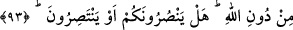
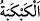

93. Size yardım edebiliyorlar mı veya kendilerine (olsun) yardımları dokunuyor
mu?
Sizden azâbı defederek “Size yardım edebiliyorlar mı veya” azâbı kendilerinden
uzaklaştırarak “kendilerine (olsun) yardımları dokunuyor mu?” Halbuki onlar da
sizinle birlikte ateştedirler.
Keşfü’l-esrâr’da der ki: “__WORD__ kötülüğü ve şerri başkasından kaldırmaya yardımcı
olmaktır. “__WORD__ ise şerri kendinden uzaklaştırmaktır. “Size yardım edebiliyorlar mı”
buyurduktan sonra “kendilerine (olsun) yardımları dokunuyor mu?” buyurulması,
yardım etmenin sıra bakımından kendisine yardımı dokunmaktan sonra gelişi
itibariyledir. Çünkü başkasına yardım edenin, şüphesiz kendisine de yardımı
dokunmasında şüphe yoktur. Ancak nâdiren başkasına yardım edenin kendisine yardımı
dokunmayabilir.
Sonra bu soru, cevabı beklenmeyen bir takrî’/azarlama ve tebkît/tekdir sorusudur. Bu
yüzden sonraki âyette şöyle buyrulmuştur:
94. Onlar ve azgınlar oraya tepetaklak (cehenneme) atılırlar.
“Onlar” yani onların putları “ve azgınlar” o putlara ibâdet edenler “oraya
tepetaklak (cehenneme) atılırlar.”
“__WORD__ baş aşağı getirmek, ters çevirmek, yüzüstü yere çarpmak, toparlayıp bir
çukura atmak demektir. Bu fiil atmak, yüzüstü düşürmek demek olan “__WORD__ fiilinin
tekrar edilmesidir. Lafzın tekrarı, mânânın da tekrarına delil kılınmıştır.
Âyetin mânâsı: Putlar ve onlara tapan azgınlar, başları aşağı tepetaklak cehennemin
dibine varıp orada kalıncaya kadar tekrar tekrar atılırlar, demektir.
95. İblîs’in bütün askerleri de...
“İblîs’in bütün askerleri de...” şeytanları, yani onları azdıran, yoldan çıkaran, putlara
tapmaları, diğer türlü küfür ve masıyetleri yapmaları için vesvese veren İblis’in
zürriyeti ve nesli de oraya atılır. Bu onların cehenneme atılmayı gerektiren fiilde